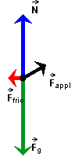
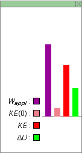
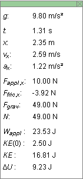
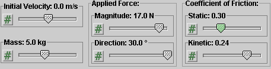
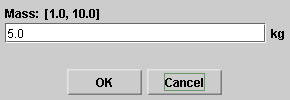
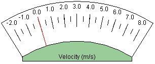
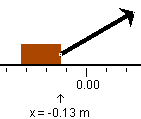

There are four basic control buttons. They are, from left to right:
-
 Rewind. Resets the simulation to the initial
position with the previously chosen initial values. If the
path is displayed, Rewind will allow you to compare
paths traversed under different conditions, e.g.,
different initial velocities.
Rewind. Resets the simulation to the initial
position with the previously chosen initial values. If the
path is displayed, Rewind will allow you to compare
paths traversed under different conditions, e.g.,
different initial velocities.
After clicking Rewind, click Play to restart the motion.
-
 Play/Pause. Starts the motion.
Play/Pause. Starts the motion.
After Play has been clicked, the button will change into the Pause button
 .
.
Clicking Pause will freeze the motion. To resume the motion, click Play once more.
-
 Step. Lets you step through the motion in equal
time steps. The size of the time steps can be adjusted
by means of the Time Step slider. See Point 9 below.
Step. Lets you step through the motion in equal
time steps. The size of the time steps can be adjusted
by means of the Time Step slider. See Point 9 below.
-
 Reset. Resets the applet to its default
setting.
Reset. Resets the applet to its default
setting.
Adjustments in the initial conditions can only be made after first clicking REWIND or RESET.

The Acceleration toggle button displays/hides the block's acceleration vector in orange.
The FBD toggle button displays/hides the free-body diagram for the block. The following image shows the free-body diagram in a situation where the acceleration is non-zero and the applied force has an upward component.

The following forces are acting on the block and are represented in the free-body diagram:
- force of gravity: green
- normal force: blue
- applied force: black
- friction force: red.
The free-body diagram can be moved to another location by clicking on the black dot at the center and dragging with the mouse.

The Energy toggle button displays/hides the energy box shown above. The four columns in the box represent the following quantities:
- Wappl: work done on the block by the applied force since the beginning of the motion; shown in purple
- KE(0): initial kinetic energy of the block at time t = 0; shown in pale red
- KE: instantaneous kinetic energy of the block; shown in red
- ΔU: change in the internal energy U of the block-table system since the beginning of the motion; shown in green.
The zero level for the four quantities is indicated by the thin horizontal line. The line is above the bottom of the energy box in order to accommodate negative values for Wappl, which are possible in the applet. The other three quantities, however, are never negative.
The energy box can be moved to another location by clicking on it and dragging with the mouse. Clicking on the "X" in the upper right-hand corner closes the box.


The Data toggle button displays/hides the draggable data box shown above. The box contains the following information:
- g: magnitude of the acceleration due to gravity
- t: time elapsed since the beginning of the motion
- x: block's x-coordinate
- vx: x-component of the block's velocity (briefly: block's velocity)
- ax: x-component of the block's acceleration (briefly: block's acceleration)
- Fappl,x: x-component of the applied force acting on the block
- Ffric,x: x-component of the force of friction acting on the block
- N: magnitude of the normal force acting on the block
- Wappl: work done on the block by the applied force since the beginning of the motion
- KE(0): block's initial kinetic energy at t = 0
- KE: block's instantaneous kinetic energy
- ΔU: change in the internal energy U of the block-table system.
The data box can be moved to another location by clicking on it and dragging with the mouse. Clicking on the "X" in the upper right-hand corner closes the box.

There are six sliders for adjusting the following variables:
- Initial Velocity: initial velocity vx(0) of the block
- Mass: mass m of the block
- Applied Force, Magnitude: the magnitude Fappl of the applied force acting on the block
- Applied Force, Direction: direction angle θ of the applied force acting on the block; θ is taken relative to the positive x-axis)
- Coefficient of Friction, Static: static coefficient of friction μs between the block and the table
- Coefficient of Friction, Kinetic: kinetic coefficient of friction μk between the block and the table.
Clicking on a slider to the left or right of the slider tab allows fine adjustment of the slider setting.
Clicking on the Input Dialog button  of
a slider (this button is not available with the two scale
sliders) opens a dialog for entering an exact value for the
slider setting. The dialog for the Mass-slider is
illustrated below. The range in which values can be entered,
from 1.0 kg to 10.0 kg in this case, is indicated above the
data entry field.
of
a slider (this button is not available with the two scale
sliders) opens a dialog for entering an exact value for the
slider setting. The dialog for the Mass-slider is
illustrated below. The range in which values can be entered,
from 1.0 kg to 10.0 kg in this case, is indicated above the
data entry field.


The velocitometer shows the block's velocity, more exactly, the x-component vx of the block's velocity.
The range of the velocitometer is from -2 m/s to 8 m/s. The applet is designed so that the velocity is never less than - 2 m/s. However, it can be greater than 8 m/s. If it is, the red needle of the velocitometer is "stuck" at 8 m/s.
The values of vx are always displayed correctly in the data box, whether vx is less or greater than 8 m/s.

Before starting the motion, you can drag the block to a desired starting position. The block's x-coordinate is indicated by an arrow below the x-axis pointing to the front edge of the block. The applet takes the front edge as the indicator of the block's position. In the illustration above, the block is at x = -0.13 m. The x-coordinate is also displayed in the data box.
The x-axis can be moved left or right by clicking on it and dragging with the mouse. The block's x-coordinate is updated automatically.